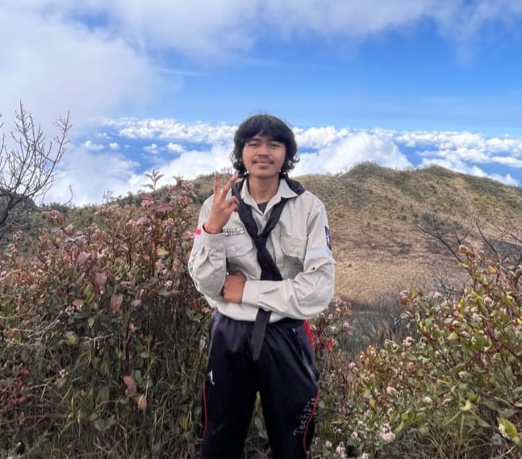
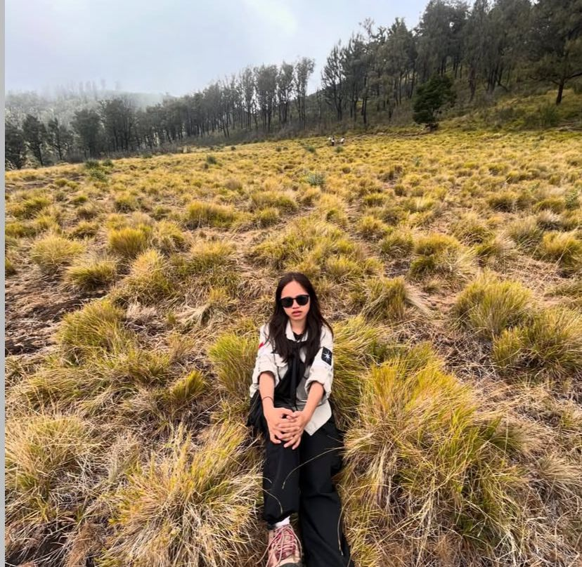
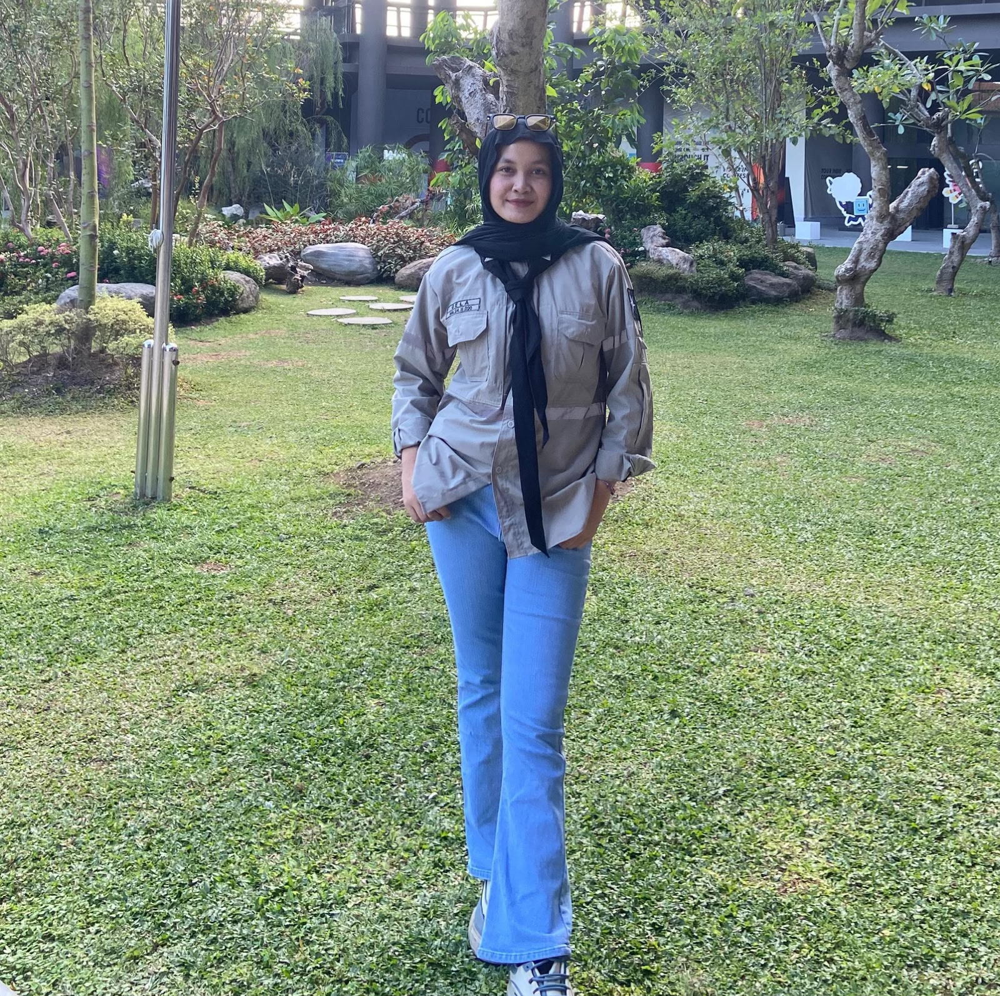
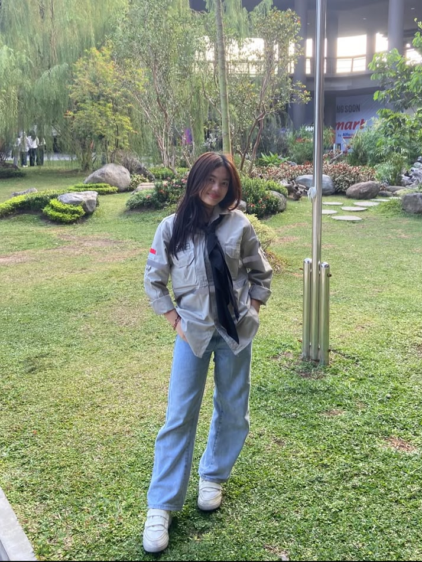
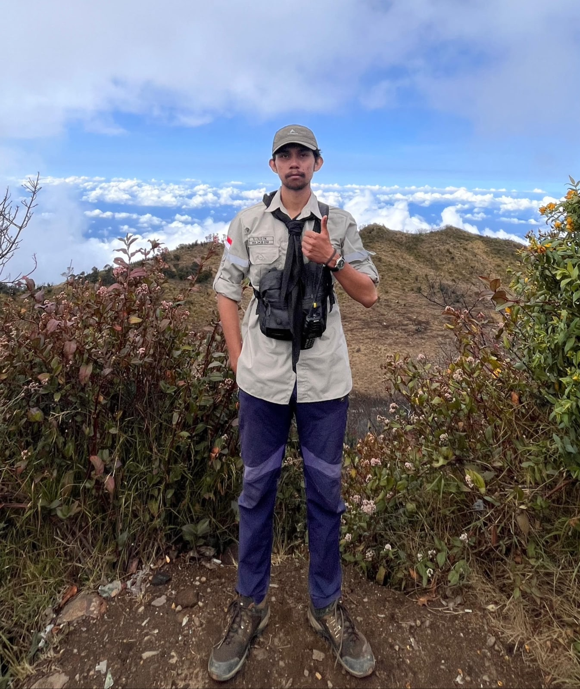
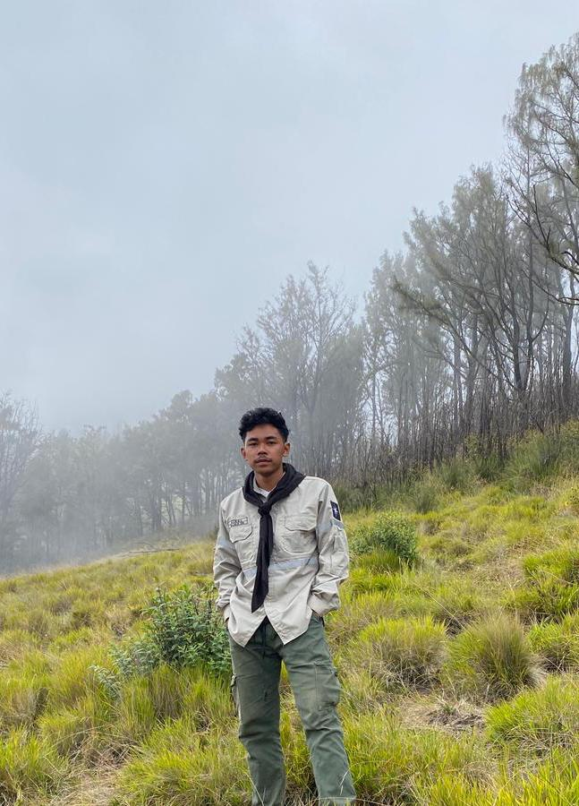
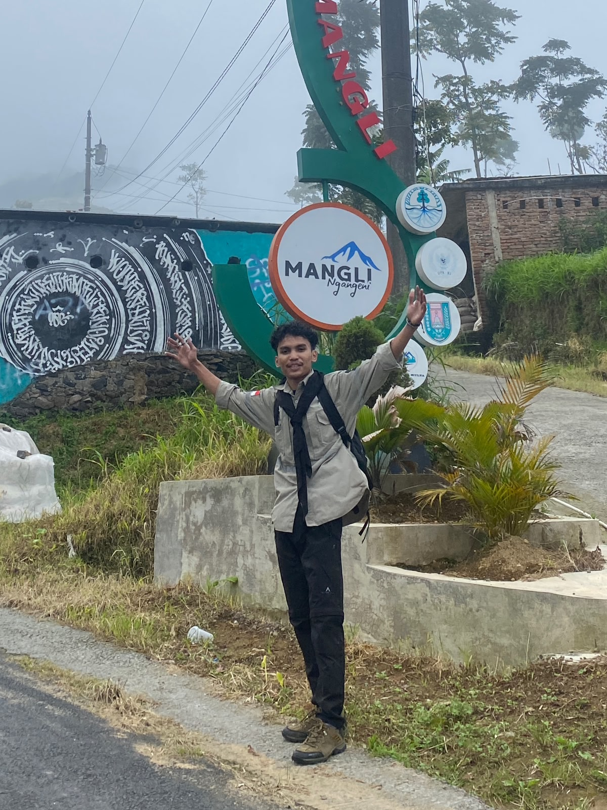
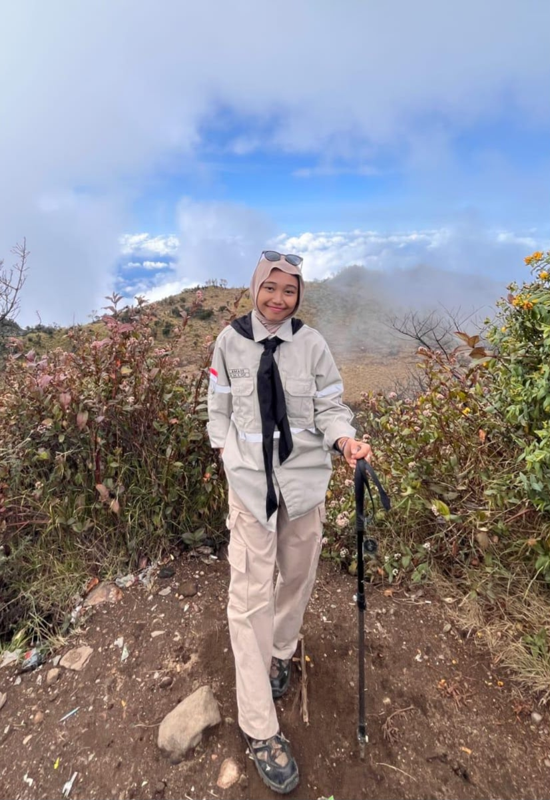

Mapatek Abhipraya — Pusat transparansi laporan, dokumen organisasi, dan dokumentasi kegiatan pecinta alam.
Mapatek Abhipraya merupakan organisasi mahasiswa pencinta alam yang berdiri pada tanggal 19 Maret 2023 di Universitas Sarjanawiyata Tamansiswa (UST) Yogyakarta. Lahir dari semangat sekelompok mahasiswa yang memiliki visi untuk melestarikan alam sekaligus membangun karakter kepribadian yang tangguh melalui kegiatan-kegiatan alam terbuka.
Berawal dari kegelisahan akan minimnya wadah bagi mahasiswa pecinta alam di kampus, serta keinginan untuk menanamkan nilai-nilai kecintaan terhadap alam dan jiwa kepemimpinan, berdirilah Mapatek Abhipraya. Berikut perjalanan angkatan yang membentuk sejarah organisasi:
"Setiap angkatan memiliki cerita dan pengabdiannya masing-masing. Mereka adalah mata rantai yang tak terputus dalam perjalanan panjang Mapatek Abhipraya."
Nama "Abhipraya" berasal dari bahasa Sanskerta yang berarti "harapan" atau "cita-cita". Nama ini mencerminkan harapan besar para pendiri organisasi untuk menjadi garda terdepan dalam pelestarian alam dan pembentukan karakter mahasiswa yang peduli terhadap lingkungan.
Sejak berdirinya, Mapatek Abhipraya telah melaksanakan berbagai kegiatan seperti pendidikan dan latihan dasar (Diksar), ekspedisi pendakian gunung, aksi konservasi lingkungan, bersih-bersih pantai, penanaman pohon, serta berbagai kegiatan sosial kemasyarakatan. Organisasi ini terus berkembang dan menjadi rumah bagi mahasiswa UST yang ingin belajar tentang alam, kepemimpinan, dan kerja sama tim.
Kenali lebih dekat para pengurus Mapatek Abhipraya yang siap melayani dan mengajak Anda menjelajahi keindahan alam








Testimoni dari anggota Mapatek Abhipraya tentang pengalaman mereka
Ranking anggota berdasarkan jumlah puncak yang berhasil ditaklukkan
Jadwal kegiatan Mapatek Abhipraya yang akan datang
Dokumentasi perjalanan Mapatek Abhipraya dari masa ke masa
Temukan tipe pendaki dalam dirimu! Jawab 5 pertanyaan sederhana ini.
Bantu kami menentukan kegiatan berikutnya!
Pantau kondisi cuaca sebelum mendaki — data real-time
Jelajahi lokasi-lokasi yang telah dikunjungi Mapatek Abhipraya
Informasi penting dari Mapatek Abhipraya
Informasi terbaru seputar kegiatan Mapatek Abhipraya
Jadwal lengkap kegiatan Mapatek Abhipraya
Gabung bersama keluarga besar Mapatek Abhipraya
Memuat status pendaftaran...
Jawaban untuk pertanyaan yang sering ditanyakan
Akses semua laporan dan dokumen resmi Mapatek Abhipraya
Kami siap membantu Anda
Sekretariat Mapatek Abhipraya
Universitas Sarjanawiyata Tamansiswa, Yogyakarta